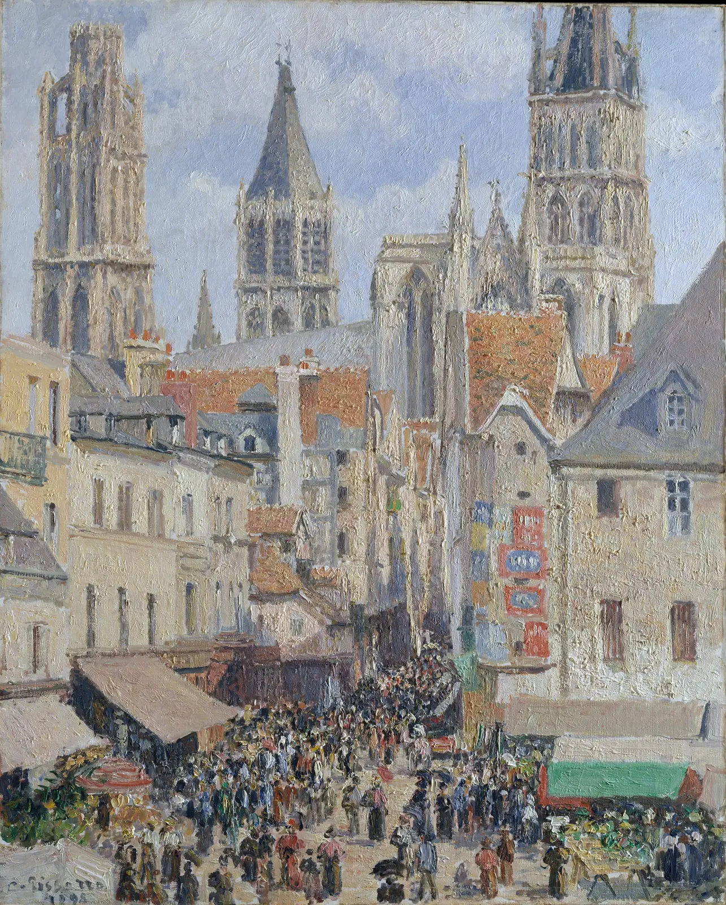

빛의 색과 그림자의 색
서점 앞 흰 벽을 하루 동안 지켜본다. 정오에는 거의 흰색이고, 해 질 녘에는 살구빛으로 물들고, 해가 지고 전구가 켜지면 창 안쪽이 주황으로 빛난다. 같은 시각, 벽에 드리운 처마 그림자는 회색이 아니라 푸르스름하다. 벽은 그대로인데 무엇이 바뀐 걸까. 이 장은 빛에 색이 있다는 사실에서 출발해, 카메라와 눈이 그 색을 어떻게 다르게 다루는지, 그리고 그림자에 왜 다른 색이 들어가는지를 따라간다.
- 색온도(K)가 무엇이고, 왜 K보다 마이어드(mired)가 변화의 크기를 고르게 보여 주는지 안다.
- "따뜻한 색, 차가운 색"이 물리량이 아니라 지각과 관습이라는 점을 구분한다.
- 눈의 색순응과 카메라의 화이트밸런스가 어떻게 다른지 보고, 사진의 색을 원하는 만큼만 보정한다.
- 하루 동안 햇빛과 하늘빛의 색과 세기가 어떻게 바뀌는지 본다.
- 그림자 색이 "햇빛이 빠지고 하늘빛만 남은 색"이라는 두 광원 모형으로 그림자의 색을 계획한다.
빛에도 온도가 있다: 색온도
쇠막대를 불에 넣고 달구면 처음에는 어두운 빨강으로, 더 뜨거워지면 주황과 노랑으로, 아주 뜨거워지면 흰빛에 가깝게 빛난다. 물체가 열 때문에 내는 빛의 색은 온도로 정해진다. 물리학은 빛을 전부 흡수하는 이상적인 물체, 곧 흑체(Black body)가 온도마다 내는 빛의 스펙트럼을 정확한 식(플랑크의 법칙)으로 알고 있다. 그래서 어떤 조명의 색을 "몇 도의 흑체가 내는 빛과 같은 색인가"로 적을 수 있다. 이것이 색온도(Color temperature)이고, 단위는 절대온도 켈빈(K)이다.
전구나 촛불은 실제로 뜨거운 필라멘트와 불꽃이 내는 빛이라 이 정의에 잘 맞는다. LED나 형광등, 하늘빛처럼 열로 빛나지 않는 빛은 "가장 비슷해 보이는 흑체의 온도"로 적고, 이를 상관 색온도(Correlated color temperature, CCT)라고 부른다. 조명 상자에 적힌 2,700 K, 6,500 K 같은 숫자는 대부분 이 상관 색온도다.
그림 1의 띠에는 이상한 점이 있다. 왼쪽 3,000 K 사이에 주황에서 흰색까지의 변화가 몰려 있고, 오른쪽 4,000 K 넓이에서는 연한 하늘색이 거의 그대로다. 켈빈 숫자의 차이가 눈에 보이는 색의 차이와 비례하지 않기 때문이다. 사진가와 조명 기술자는 그래서 색온도의 역수를 쓴다. 이를 마이어드(Mired, micro reciprocal degree)라고 한다.
아래 시뮬레이터의 두 띠는 같은 1,500~12,000 K 범위를 위는 K 눈금으로, 아래는 마이어드 눈금으로 펼친 것이다. 슬라이더나 띠 위의 손잡이로 색온도를 옮기면서, 같은 "500 K"가 어디서는 큰 변화이고 어디서는 거의 변화가 아닌 것을 확인한다.
켈빈 자와 마이어드 자
마이어드로 생각하면 실무의 감각이 정리된다. 2,700 K 전구를 3,000 K로 바꾸는 것(약 37 마이어드)은 6,500 K 조명을 8,000 K로 바꾸는 것(약 29 마이어드)과 비슷한 크기의 변화다. 따뜻한 쪽의 수백 K는 크고, 차가운 쪽의 수천 K는 작다. 조명을 고르거나 사진의 색온도를 만질 때 "몇 K 올릴까"보다 "따뜻한 쪽에서 움직이는가"를 먼저 묻는 이유다.
따뜻한 색, 차가운 색: 물리와 지각이 반대로 간다
그림 1의 아래쪽 화살표를 다시 본다. 색온도가 낮은 주황빛을 우리는 "따뜻하다"고 하고, 색온도가 높은 푸른빛을 "차갑다"고 한다. 물리의 온도와 말의 온도가 정반대다. 이 엇갈림이 보여 주는 것은 단순하다. 색의 한난(Warm–cool), 곧 따뜻함과 차가움은 빛의 물리량이 아니라 사람이 색에 붙인 느낌과 이름이다.
그 느낌이 어디서 왔는지는 확실히 알 수 없지만 흔한 설명은 경험의 연상이다. 불, 해 질 녘, 난로는 주황과 빨강이고, 물, 그늘, 얼음, 겨울 하늘은 파랑과 청록이다. 여러 문화권에서 비슷한 짝짓기가 보고되지만, 색이 실제로 몸이 느끼는 온도를 바꾼다는 주장(예를 들어 파란 방이 더 춥게 느껴진다는 이른바 색상–온도 가설)은 연구 결과가 엇갈린다. 이 책은 한난을 "그림과 디자인에서 오래 써 온 약속이자 지각의 경향"으로 다루고, 체온이나 매출을 바꾸는 힘으로 다루지 않는다(12장).
그러니 한난은 두 가지 뜻으로 쓰인다. 하나는 빛의 색온도로, 측정할 수 있는 양이다. 다른 하나는 색과 색 사이의 기울기로, 비교로만 정해지는 지각이다. 화가가 "그림자를 차갑게"라고 할 때는 대개 두 번째 뜻, 곧 "빛 받은 부분보다 파랑 쪽으로 기울게"라는 말이다. 이 장의 뒷부분에서 그 말이 실제 빛의 물리와 어떻게 맞닿는지 본다. 이텐이 한난 대비를 일곱 가지 대비의 하나로 꼽은 것도 이 관계의 성질 때문이다(8장).
눈은 맞추고, 카메라는 적는다
전구 아래에서 책을 읽을 때 종이는 주황이 아니라 흰색으로 보인다. 몇 분만 지나면 눈과 뇌가 그 조명의 색에 익숙해져서, 조명이 가장 많이 가진 색을 그만큼 덜 느끼게 되기 때문이다. 이를 색순응(Chromatic adaptation)이라고 한다. 망막의 세 원뿔세포가 각자 받는 빛의 평균에 맞춰 감도를 낮추거나 높인다는 것이 19세기 말 폰 크리스(Johannes von Kries)가 내놓은 기본 생각이고, 오늘날 색 변환 소프트웨어가 쓰는 브래드퍼드 변환도 이 생각을 다듬은 것이다. 이 책의 엔진도 이 방식으로 계산한다.
카메라에는 이 일을 대신하는 설정이 있다. 화이트밸런스(White balance)는 "이 장면의 빛이 몇 K였다"고 카메라에 알려 주고, 그만큼 반대 방향으로 색을 옮겨 흰 물체가 희게 찍히게 하는 보정이다. 휴대폰은 대개 장면을 보고 빛의 색을 스스로 짐작한다(자동 화이트밸런스). 짐작이 틀리거나, 조명이 두 가지 섞여 있거나, 일부러 낮빛 기준으로 고정해 두면 전구 아래 사진은 주황으로, 그늘 사진은 파랗게 나온다.
두 방식에는 결정적인 차이가 하나 있다. 사람의 순응은 완전하지 않다. 전구 아래 종이가 희게 보인다고 해도, 창밖의 낮빛과 나란히 놓으면 실내가 노랗게 느껴진다. 해 질 녘의 금빛도 그 빛 속에 있는 사람에게 여전히 금빛으로 보인다. 반대로 카메라의 보정은 숫자만큼 정확히 한다. 그래서 완벽하게 보정한 해 질 녘 사진은 "기억과 다르게" 밋밋해 보이곤 한다. 사진을 보정하는 사람이 정해야 하는 것은 "얼마나 희게"가 아니라 "그 빛의 기운을 얼마나 남길까"다.
화이트밸런스: 사진에서 흰색 찾기
아래는 가상의 책방 내부를 그린 장면이다. 나무 서가, 여러 색의 책, 계산대 위의 흰 종이와 회색 카드, 크라프트지 간판이 있다. 장면 전체를 한 가지 빛으로 비추고, 화이트밸런스를 낮빛(6,500 K)에 고정한 카메라로 찍은 결과에서 시작한다. 슬라이더는 카메라에 "이 빛은 몇 K였다"고 알려 주는 설정이다. 사진 위를 눌러 그 점을 흰색 기준으로 삼을 수도 있다(스포이트).
카메라의 화이트밸런스
회색 카드를 누르는 순간 사진이 돌아오는 것은, 회색과 흰색이 "빛의 색을 그대로 돌려보내는" 물체이기 때문이다. 그 점이 주황으로 찍혔다면 빛이 주황이었던 것이다. 색이 있는 물체를 기준으로 삼으면 카메라는 물체의 색까지 빛의 색으로 오해한다. 자동 화이트밸런스도 같은 문제를 안고 있다. 대부분의 알고리즘은 "장면의 평균은 회색일 것"이나 "가장 밝은 곳은 흰색일 것" 같은 가정에서 출발하므로, 장면 전체가 한 색으로 기운 노을이나 붉은 벽돌 골목에서는 그 색을 지워 버린다.
하루의 빛: 햇빛과 하늘빛
야외의 빛은 하나가 아니라 둘이다. 해에서 곧장 오는 직사광(Direct sunlight)과, 대기에 흩어져 하늘 전체에서 오는 하늘빛(Skylight)이다. 공기 분자는 파장이 짧은 파랑 빛을 긴 파장의 빨강 빛보다 훨씬 잘 흩뜨린다(레일리 산란). 그래서 하늘은 파랗고, 그만큼 파랑을 잃은 직사광은 우주에서 볼 때보다 조금 더 노랗다.
해가 낮아지면 햇빛이 지나는 공기의 두께가 급격히 늘어난다. 머리 위에서 내리쬘 때를 1로 하면 고도 30°에서는 약 2배, 10°에서는 약 5.6배, 지평선 근처에서는 30배를 넘는다. 긴 길을 지나는 동안 파랑은 거의 다 흩어지고 빨강·주황만 남는다. 해 질 녘 햇빛이 주황인 이유다. 동시에 직사광이 크게 약해지므로, 상대적으로 하늘빛의 몫이 커진다. 아래 시뮬레이터는 10월 중순 서울(북위 37.5°)의 맑은 날을 가정하고, 시각에 따른 두 빛의 색과 세기를 보여 준다.
하루의 빛: 햇빛과 하늘빛
시뮬레이터에서 본 것을 화가의 말로 바꾸면 이렇다. 한낮에는 빛과 그늘의 명도 차이가 크고 색 차이는 작다. 해 질 녘에는 명도 차이가 줄고 색 차이가 커진다. 햇빛은 주황으로, 하늘빛은 여전히 파랑으로 남기 때문이다. 해가 진 직후의 매직 아워(Magic hour)나 푸른 시간(blue hour)에는 직사광이 사라지고 하늘빛만 남아 장면 전체가 푸르게 가라앉는다. 그 속에서 켜진 전구의 창이 유난히 따뜻해 보이는 것은 색온도 차이가 가장 커지는 순간이라서다.
그림자에 들어가는 색
이제 서장의 질문, 흰 벽의 그림자가 왜 푸르스름한지 답할 수 있다. 그림자는 빛이 "없는" 곳이 아니라 한 가지 빛이 빠진 곳이다. 맑은 날 벽의 양지는 햇빛과 하늘빛을 둘 다 받고, 처마 그림자 속은 햇빛만 가려진 채 하늘빛을 받는다. 그래서 그림자의 색은 하늘빛의 색, 곧 파랑 쪽이다. 눈은 장면에서 가장 큰 빛(햇빛+하늘빛)에 순응해 있으므로, 하늘빛만 받는 그림자는 그 기준보다 더 파랗게 느껴진다.
이 생각을 식으로 쓰면 1장의 \(C = E\times R\)에 광원을 둘로 나눈 것이다.
아래 시뮬레이터에서 흰 상자 하나를 세 가지 상황에 둔다. 맑은 하늘, 흐린 하늘, 그리고 북쪽 창 하나로 빛을 받는 화실이다. 해의 높이를 슬라이더로, 해의 방향을 화면을 끌어 바꾼다.
빛 두 개, 그림자 하나
세 상황을 나란히 놓으면 "그림자는 차갑게"는 규칙이 아니라 맑은 날 야외의 사정이라는 것이 보인다. 그림자의 색을 정하는 것은 "그림자 속까지 들어오는 빛은 무엇인가"다. 맑은 하늘 아래에서는 파란 하늘빛, 북창 화실에서는 방 안의 따뜻한 반사광, 촛불 하나만 켠 방에서는 거의 아무 빛도 없다(그래서 아주 어둡다). 잔디밭 위의 흰 셔츠 그림자에는 초록 반사광이, 붉은 벽돌 골목의 그림자에는 붉은 반사광이 든다.
화가들의 빛과 그림자
19세기 후반 야외 사생(plein air)에 나선 인상주의 화가들은 같은 장소를 시간과 날씨를 바꿔 가며 반복해 그렸다. 카미유 피사로(Camille Pissarro, 1830–1903)도 말년에 루앙과 파리의 창가 방을 빌려 같은 거리와 정원을 여러 번 그렸다. 아래 그림은 루앙의 좁은 골목 장날 풍경이다. 오후의 햇빛을 받은 건물 정면과, 그 빛이 닿지 않는 골목 바닥과 그림자 쪽 벽을 비교한다.

그림자를 검정이나 갈색을 섞어 어둡게 하는 대신 파랑·보라 쪽으로 기울여 칠한 것은 인상주의 화가들의 그림을 설명할 때 흔히 드는 특징이다. 앞 절의 두 광원 모형으로 보면, 그것은 맑은 날 야외에서 실제로 일어나는 일을 눈으로 확인하고 옮긴 결과이기도 하다. 다음 시뮬레이터는 피사로가 1899년 파리 리볼리 거리의 방에서 같은 튈르리 정원을 내려다보며 그린 두 점을 겹쳐 놓았다. 하나는 봄날 아침, 하나는 겨울 오후다. 경계선을 끌어 두 그림을 오가며, 아래 띠에 뽑은 주요 색을 비교한다.
같은 정원, 다른 빛
두 그림의 차이를 "봄은 따뜻하고 겨울은 차갑다"로 요약하면 반만 맞다. 겨울 오후의 낮은 해는 사실 색온도가 낮은 빛이라, 겨울 그림의 하늘 아래쪽과 나무 끝에는 노란 기운이 남아 있다. 장면 전체를 차갑게 만든 것은 빛의 색보다 짙은 대기와 약한 직사광, 그리고 잎이 진 나무와 젖은 땅의 색이다. 화가가 그린 것은 색온도 숫자가 아니라, 그 시간에 그 장소에서 빛과 그늘과 물체의 색이 맺은 관계 전체다.
해 질 녘을 설계하기
지금까지의 도구를 모두 모아 한 장면을 설계한다. 서쪽을 향한 작은 서점의 정면이다. 길 건너 건물이 낮은 해를 가리면서 그림자가 벽을 타고 올라오고, 정면 위쪽만 마지막 햇빛을 받는다. 창 안에는 2,800 K 전구가 켜져 있다. 해의 고도와 하늘빛, 창 불빛의 비율이 시각마다 바뀌고, 아래 띠에는 그 순간을 그림으로 옮길 때 필요한 여섯 색이 정리된다. 시각은 슬라이더로, 또는 왼쪽 위 작은 하늘에서 해를 끌어 바꾼다.
「해 질 녘 서점 앞」 색 계획
아래 띠의 빛 받은 벽과 그림자 벽을 나란히 보면 해 질 녘 그림의 핵심이 보인다. 두 색은 명도만큼이나 색상에서도 멀다. 양지는 주황 쪽, 그림자는 파랑·보라 쪽으로 서로 반대편에 서 있고, 그 사이에 하늘과 창 불빛이 각자의 자리를 갖는다. "그림자에는 보색을 넣는다"는 오래된 화실의 요령은 이 관계를 짧게 줄인 말이다. 다만 앞 절의 북창 화실에서 봤듯, 그 요령이 맞는 것은 그림자 속까지 들어오는 빛이 정말 반대 색일 때다.
서윤의 작업 노트
그림자는 회색이 아니라 하늘색이었다
10월 둘째 주 저녁, 서윤은 「해 질 녘 서점 앞」의 밑그림을 들고 책방 E 맞은편 보도에 섰다. 서점 정면은 서쪽을 향해 있어서, 해가 낮아지면 길 건너 건물 그림자가 벽을 타고 올라온다. 지난주 작업실에서 칠한 첫 색 시안은 그림자를 벽 색에 페인즈 그레이를 섞어 칠한 것이었는데, 실제 벽 앞에 대 보니 그림자만 진흙처럼 탁했다. 도경은 팔레트에서 흰 종이 한 장을 떼어 그림자 속에 넣었다. "봐, 종이가 파래지지. 그림자 속에는 하늘이 들어와 있어. 색을 빼지 말고 다른 빛으로 바꿔."
서윤은 이 장의 모형으로 시각을 맞춰 봤다. 해가 지기 약 40분 전인 16시 54분(태양시), 태양 고도 약 8°일 때 이 책의 모델로 계산하면 빛 받은 벽은 #e0c1a0(살구빛), 그림자 진 벽은 #44566d(푸른 회청)이다. 명도 L* 차이도 44로 크지만, OKLCH 색상각은 175° 벌어져 거의 색상환의 반대편에 선다. 페인즈 그레이를 섞은 첫 시안처럼 빛 받은 색에 검정만 섞으면 색상 차이는 0이다. 서윤은 그림자를 4장에서 고른 기본 3색의 파랑에 보조색 번트 시에나를 아주 조금 섞어 차분한 회청으로 만들고, 창 불빛만 그림 전체에서 가장 따뜻하고 밝은 자리로 남기기로 했다. 도경은 그 계획 옆에 "30분이면 빛이 바뀐다. 색 메모는 같은 시각에 사흘"이라고 적었다.
같은 주에 서윤은 웹사이트에 올릴 서점 내부 사진을 정리했다. 전구색 조명(약 2,800 K) 아래에서 휴대폰 화이트밸런스를 낮빛에 고정하고 찍은 사진을 이 책의 모델로 다시 계산하면, 계산대 위 흰 종이는 #ffd9a2(주황빛), 크라프트지 간판 위 로고 초록 #2f7d5b는 #4d6b22(올리브빛)으로 찍힌다. 회색 카드에 완전히 맞추면(2,800 K → 낮빛) 종이는 #e4e0da, 초록은 #007356으로 돌아오지만, 주인은 그 사진을 보고 "우리 가게 같지 않다"고 했다. 서윤은 보정할 거리의 약 3분의 2(마이어드로 357 → 222, 곧 4,500 K까지)만 옮겼다. 종이는 #fbdcb1의 연한 크림색으로, 초록은 #227143으로 남는다. 사진 속 초록은 조명과 보정에 따라 이렇게 움직이므로, 로고 초록의 기준은 사진이 아니라 OKLCH 기록이라는 3장의 원칙도 다시 적었다.
핵심 정리
- 색온도(K)는 빛의 색을 같은 색으로 빛나는 흑체의 온도로 적은 값이다. 낮을수록 주황, 높을수록 푸르스름하다. 변화의 크기는 K보다 역수인 마이어드(106/T)가 훨씬 고르게 보여 준다.
- "따뜻한 색, 차가운 색"은 물리량이 아니라 지각과 관습이다. 색온도가 낮은 빛을 따뜻하다고 부르고, 초록·보라처럼 경계의 색은 옆 색에 따라 한난이 바뀐다.
- 눈은 조명의 색에 순응하지만 완전하지 않고, 카메라의 화이트밸런스는 정해진 숫자만큼 정확히 보정한다. 흰색·회색을 기준으로 삼아야 하며, 분위기 사진은 보정할 거리의 일부만 가는 선택도 있다.
- 야외의 빛은 직사광과 하늘빛 둘이다. 해가 낮을수록 직사광은 주황으로 바뀌고 약해져, 양지와 그늘의 명도 차이는 줄고 색 차이는 커진다.
- 그림자는 한 광원이 빠진 자리다. 맑은 날 야외의 그림자에는 파란 하늘빛이 남고, 북창 화실의 그림자에는 따뜻한 반사광이 든다. 그림자 색은 "그림자 속까지 들어오는 빛"으로 정한다.
- 그림자를 검정으로 어둡게 하면 명도는 맞아도 색이 탁해진다. 해 질 녘 그림에서 양지와 그림자는 명도뿐 아니라 색상에서도 멀어, 색상환의 거의 반대편에 선다.
확인 퀴즈
1. 조명 상자에 "6,500 K"와 "2,700 K"가 적혀 있다. 두 조명에 대한 설명으로 옳은 것은?
2. 맑은 날 오후, 흰 벽에 드리운 처마 그림자가 푸르스름하게 보인다. 가장 알맞은 설명은?
3. 전구색 조명(약 2,800 K) 아래 카페 사진을 화이트밸런스 4,000 K로 보정했다. 결과로 가장 알맞은 것은?
4. 북쪽 창 하나로만 빛이 드는 화실에서 흰 석고상을 그린다. 그림자 색 계획으로 가장 알맞은 것은?